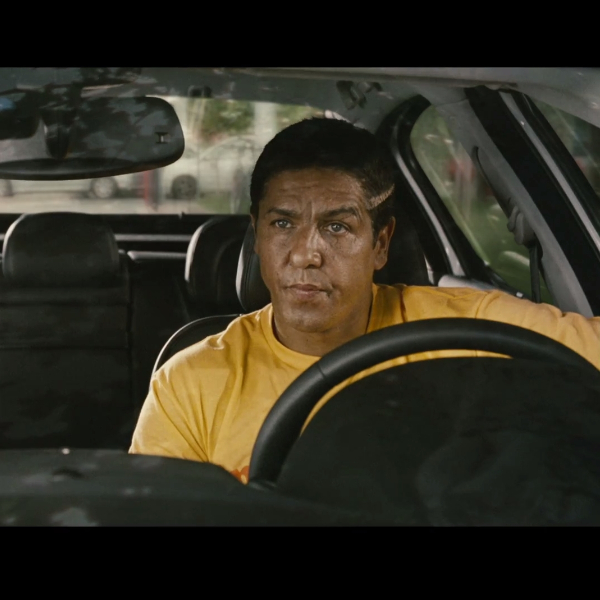
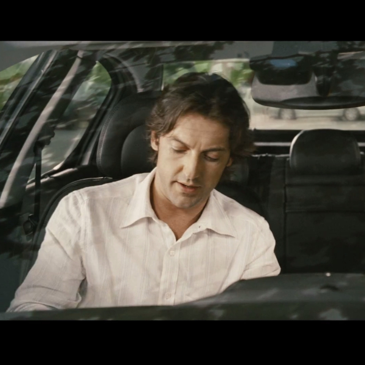
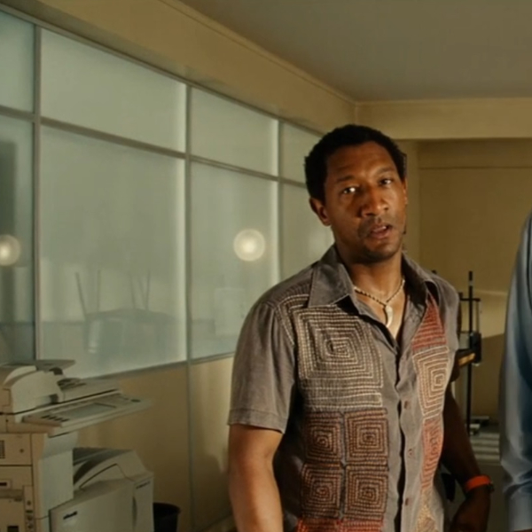
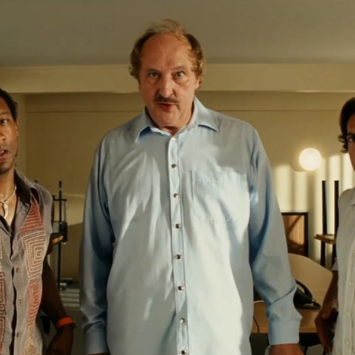
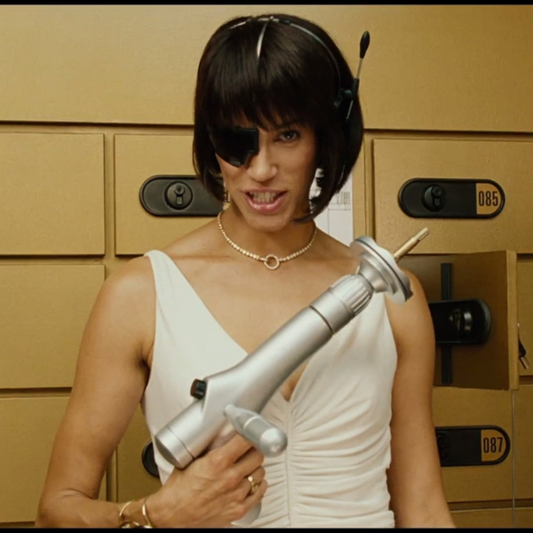
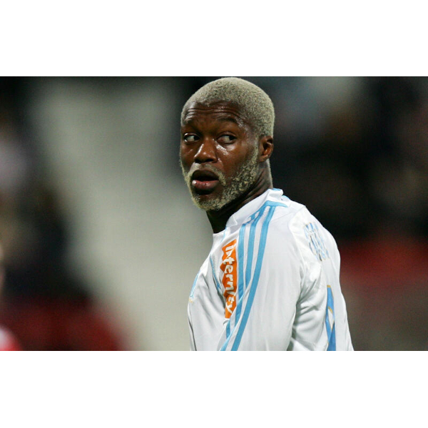

|  | 名前 | ダニエル・モラレース |
|---|---|---|
| 演者 | サミー・ナセリ | |
| 立場 | 主人公 | |
| 仕事 | タクシードライバー | |
| 説明 |
ハイテク装備と命知らずな暴走運転が売りのタクシードライバー。 今作では妻となったリリーとの間に息子のレオを儲け、 相変わらずの暴走タクシー稼業を営む傍らで息子レオやエミリアンの子供、 マックスの面倒を見る良き父親となっている。 また、愛車のタクシーを406から407に変えている。 警察嫌いであるが、今作ではエミリアンだけでなくアランや他の署員達とも親しく接しており、 スピード違反を取り締まる署員からもこれまでの功績から違反行為を黙認されている状態である。 ドジを犯してクビの危機に直面したエミリアンに再び力を貸すこととなり彼と共に凶悪犯アルヴェール一味を追ってモナコへ向かう。 |
|  | 名前 | エミリアン・クタン=ケルバレーク |
|---|---|---|
| 演者 | フレデリック・ディファンタル | |
| 仕事 | 刑事 | |
| 説明 | ドジで騙されやすくそそっかしいマルセイユ警察の刑事。 前作のラストで生まれた息子マックスを溺愛しており、 サッカーをやらせるのに大げさな防具(まるでアイスホッケーでもやるかのような)を付けさせたり、 プレイ中はボールに触るなと指示するなど過保護で親バカとなっている。 一方でマックスが怪我した時には、 署からの連絡に夢中でまったく気がつかなかったり、 張り込み中に熟睡するなど間抜けな性格は相変わらず。 今作でも任務中にヘマを犯し、 凶悪犯アルヴェール・ヴァンデンボッシュにまんまと逃げられるという大失態を犯し、 ジベールに警官バッジを取り上げられてしまい、汚名を返上すべくダニエルの力を借りてアルヴェール一味を追う。 |
|  | 名前 | アラン |
|---|---|---|
| 演者 | エドゥアルド・モントート | |
| 仕事 | 刑事 | |
| 説明 | マルセイユ警察の刑事でエミリアンやジベールに振り回される苦労人。 終盤にアルヴェール一味のアジトに突入するジベールのサポート役を担うが、 ジベールが立っている突入用装置が動かないため、 装置の出力を最大にしたせいでシベールが吹き飛ばされ、 ジベールが屋敷の麻薬の上に落ちハイになる原因を作ってしまう。 |
|  | 名前 | ジベール |
|---|---|---|
| 演者 | ベルナール・ファルシー | |
| 仕事 | 警察署長 | |
| 説明 | エミリアンを遥かに上回るほど間抜けでお調子者なトラブルメーカー。 警察署に入り込んだ子供のサッカーボールが自分の頭にぶつかっただけでペンでボールをボロボロに潰して返したり、 ジブリル・シセを警護する際に頭を無理やり押さえつけて乱暴に車に乗せるなど、サッカーに対してまったく関心を示さず、 署員達やマックス、レオに対してはかなり雑に接する。 元々抜けた性格であったが、今作ではサングラスに値札を付けたまま使用したり、故障した腕時計にまったく疑いを示さなかったり、 麻酔銃の構え方を教えている最中に麻酔銃を誤射してしまうなど、過去作よりも間抜けぶりに拍車がかかっている。 部下達からは密かに「危険人物」呼ばわりされたり、潜入していたセルジュも思わず呆気にとられるなど、 周囲から変人扱いされたり、バカにされたりしている。 今作でも相変わらず捜査の最前線に立ち、自ら任務に赴こうとし、 終盤でアルヴェール達のアジトに自ら特殊部隊を率いて突入しようとするがドジを犯した挙句、 それが原因で麻薬を大量に吸引してハイになり、敵味方の見境が付かなくなって機関銃やミサイルを乱射しまくる[注釈 2]が、結果的にそれがアルヴェール捕縛の決め手となった。その後はアラン達がどうにか元に戻そうと尽力したらしいが結局、最終盤までハイな状態は治まる事はなく、ラストシーンではサッカーの試合に乱入して、飛んできたボールを拾い、 リフティングなどの技を披露した挙句、ゴールの網が破れるほどのシュートをした。 |
|  | 名前 | ペトラ・クタン=ケルバレーク |
|---|---|---|
| 演者 | エマ・シェーベルイ | |
| 仕事 | 刑事 | |
| 説明 | エミリアンの妻で、夫と同じマルセイユ警察の刑事。 前作のラストで息子のマックスを出産している。 エミリアンやジベールとは正反対に非常に優秀な刑事であり、 今回ではその才能を生かしてマルセイユ警察も知らない特殊任務のため、 女泥棒に扮して脱走したアルヴェール一味に潜入することとなる。 |
|  | 名前 | ジブリル・シセ |
|---|---|---|
| 演者 | ジブリル・シセ | |
| 仕事 | サッカー選手 | |
| 説明 | 本編冒頭でマルセイユ警察が警護していたフランス代表のサッカー選手。 マルセイユのサッカーチームへ移籍し、その初試合が行われるスタジアムまで、 ダニエルのタクシーで送ってもらう。 前作『③』に登場した謎の客に続き、 仕事中のダニエルのタクシーで嘔吐しなかった稀有な人物 |